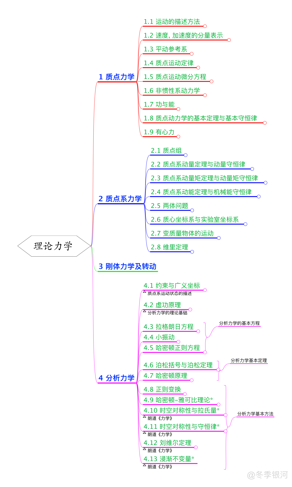

理论力学复习概要
最后更新：2021.05.31, 17:34
本文总结了本科理论力学学习的主要知识. 该文章于去年为理念经所夏令营面试做准备所写, 最早发布于知乎, 原标题为 “两个月速成 (误) 物理学本科高年级课程之理论力学篇: 总纲“.
(原) 序言
虽然说是速成, 但其实是复习, 希望不要被标题误导了… 因为研究生想做引力方面理论研究, 所以在两个月左右之后大概会去参加理论所的夏令营. 复习的内容主要是四大力学, 基本的广义相对论以及群论, 还有时间的话可能会写一点傅里叶光学和数理方法方面的东西. 虽然内容确实不少, 但想想去年电动力学考试的时候也才花了三天的时间复习, 两个月复习完这些也是有可能的吧? 果然 deadline 才是第一生产力 😂
由于写这个系列的目的是为了复习, 大部分内容都是按照自己的理解来写的, 难免有所纰漏. 如认为内容存在任何问题, 欢迎在评论区提出.
大纲

正文
理论力学是四大力学中最基本的一门课程, 可以说是其它三大力学的基础.
对物理系学生来说, 理论力学中最主要的是分析力学的部分. 但在实际的教学中, 似乎老师都会选择复习一下经典牛顿力学 (特点是微积分的使用比例相较力学课程中大幅上升). 在总纲部分仍打算沿用此思路, 先回顾一下经典牛顿力学 (主要是比力学学习时多出的部分), 再介绍分析力学 (不过之后的文章将主要介绍分析力学).
按照研究体系, 牛顿力学可以分为两个部分: 质点力学与质点组力学.
在质点力学中, 首先利用微积分的来对质点的运动进行描述, 一般认为这是属于运动学的内容. 随后借助牛顿三大定律, 将动力学因素与运动学因素联系起来. 值得注意的是, 牛顿定律本身并不告诉我们具体的力的作用 (正如量子力学的基本假设并不告诉我们体系的哈密顿量怎么写), 具体的力如何作用是由诸如库伦定律, 胡克定律等实验定律来决定的. 除了直接利用运动方程来对系统进行描述外, 还可从牛顿定律出发, 推导出机械能守恒定律, 第一次引入了能量的概念.
相比与力学课程的学习, 理论力学牛顿力学的部分额外讨论了质点在有心力场下的运动, 并在进行坐标变换后, 给出了一般的运动方程—-比耐公式, 随后讨论了在平方反比的中心力场下质点的运动. 在这之后, 则介绍了如何从开普勒三大定律归纳出万有引力定律.
在质点组力学中, 重要的是质心的引入, 以及与之相关的一系列质心运动定理. 这使得我们可以先考虑质点组的整体运动, 而无须考虑其内部自由度. 在具体的例子中, 考虑了两体问题 (行星绕日运动的修正、卢瑟福散射). 此外, 相比力学中的学习, 理论力学中额外学习了维里定理, 其表述为: 在很长时间间隔内, 质点组的动能对时间的平均值取负号等于作用在此质点组上的力的维里. 该定理具有统计性质, 着重研究各种力学量对时间的平均值的相互关系, 阐述了质点组随时间演化的整体规律, 其在量子力学, 统计物理中都有应用.
除了两体体系以外, 最简单的质点组是刚体. 对于刚体, 其内部自由度只有转动自由度.
在利用较多的数学 (相比力学学习) 重新回顾了经典牛顿力学后, 来到了理论力学的重点: 分析力学.
从牛顿力学过渡到分析力学的重要性在于: 牛顿力学是矢量力学, 而分析力学是标量力学. 从拓展的观点上看, 标量力学更容易拓展. 而过渡的基本出发点在于, 对于静止体系的研究.
在引入了自由度及约束的概念后, 将介绍的第一个重要的思想是 虚功原理. 为了阐释方便, 不妨将考虑约束后物体剩下的自由度称为 “剩余自由度”. 所谓 “虚功”, 即是假定物体的剩余自由度进行一个微小的变化时, 体系所做的功. 虚功原理认为, 物体的平衡条件是虚功为 0. 利用此思想, 可以简化一些使用传统矢量力学难以分析的受力平衡问题.
但只分析静力学是不够的, 接下来引入的另一个思想是 达朗贝尔原理. 表面上看, 达朗贝尔原理进行的操作在数学上是及其平凡的: 无非是将速度项移到运动方程的左侧. 但从物理上看, 这相当于将惯性系中的动力学问题, 转化为了非惯性系中的受力平衡问题, 从而可以利用虚功原理进行分析. 在进行具体计算后, 不但引入了 广义动量 与 广义力 的概念, 还给出了一般形式的拉格朗日方程. 若力为保守力, 则可得到保守系下的拉氏方程, 并归纳出极为重要的 拉格朗日量 的概念.
利用拉氏方程, 可以引出循环积分的概念. 具体而言, 若拉氏量不显含某个广义坐标 (或称关于某个广义坐标具有对称性), 则对应的拉氏量对相应广义速度的微分 (亦即广义动量) 为一不变量. 这个过程初步揭示了对称性与守恒量的关系. 随后利用保守系下的拉氏方程研究了最简单的保守体系: 微振动.
虽然得到了拉氏方程, 形式上也可以加上广义坐标与广义速度的关系来将二阶微分方程化为一阶方程组, 但得到的方程组形式上并不对称, 并没有使问题得到简化. 此外, 拉氏量本身没有明确的物理意义, 因此分析力学的工作仍然没有结束. 为此, 利用数学上的勒让得变换, 将拉氏方程由广义坐标与广义速度的函数, 变为了关于广义坐标与广义动量的函数, 并得到了形式对称的一阶方程组—- 哈密顿正则方程组.
在得到了形式上更对称的方程后, 可以进一步引入一些手段来方便对其的研究. 为此引入的第一个数学工具是泊松括号, 而其最重要的结果是泊松定理. 泊松定理给出了一种从两个已知运动积分构造新的运动积分的方式.
随后提出了哈密顿原理. 相比与牛顿定律, 哈密顿原理是更具普遍性的原理. 在该原理的阐述中, 引入了作用量的概念 (其实就是拉氏函数对时间的积分). 该原理给出了在已知起始态与末态时, 求解相空间演化轨迹的方式. 具体而言, 哈密顿原理认为, 相空间真实的动力学演化轨迹, 对应于使作用量变分取极值的轨迹. 值得一提的是, 朗道的《力学》就是先从哈密顿原理出发, 给出拉氏方程, 并通过对时空对称性的分析, 归纳出经典物理中拉氏量的形式.
除了上述内容之外, 分析力学中一般还包括正则变换 (可以将勒让得变换视为正则变换的一种特殊情形), 哈密顿—-雅可比理论, 刘维尔定理等内容.
本博客所有文章除特别声明外，均采用 CC BY-NC-SA 4.0 协议 ，转载请注明出处！